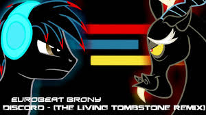
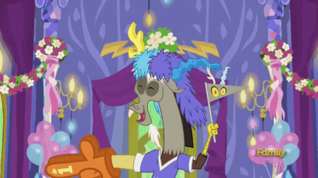

I'm not a fan of puppeteers, but I've a nagging fear Someone else is pulling at the strings Something terrible is going down through the entire town Wreaking anarchy, and all it brings I can't sit idly, no, I can't move at all I curse the name, the one behind it all Discord, I'm howlin' at the moon And sleepin' in the middle of a summer afternoon Discord, whatever did we do To make you take our world away? Discord, are we your prey alone Or are we just a stepping stone for taking back the throne? Discord, we won't take it anymore So take your tyranny away I'm fine with changing status quo, but not in letting go Now the world is being torn apart A terrible catastrophe played by your symphony What a terrifying work of art I can't sit idly, no, I can't move at all I curse the name, the one behind it all Discord, I'm howlin' at the moon And sleepin' in the middle of a summer afternoon Discord, whatever did we do To make you take our world away? Discord, are we your prey alone? Or are we just a stepping stone for taking back the throne? Discord, we won't take it anymore So take your tyranny away Discord, I'm howlin' at the moon And sleepin' in the middle of a summer afternoon Discord, whatever did we do To make you take our world away? Discord, are we your prey alone Or are we just a stepping stone for taking back the throne? Discord, we won't take it anymore So take your tyranny away
website created by: Sithew Credits to: The Living tombstone for the song and lyrics